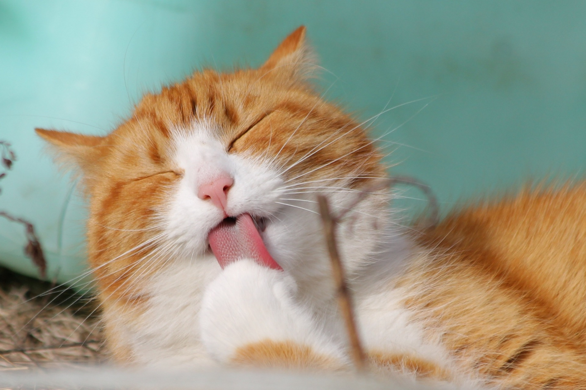

Mis proyectos recientes
Estos son algunos proyectos que he creado recientemente...

.png)
Soy una ingeniera qu√≠mica en busca de mi primer empleo. Tambi√©n cuento con una formaci√≥n t√©cnica en mecatr√≥nica. Como principiante en el campo de la programaci√≥n front end, tengo experiencia en el desarrollo de paginas web utilizando HTML, CSS y JavaScript. y estoy dispuesta a seguir aprendiendo para mejorar mis habilidades en este campo. Cuento con experiencia en dise√±o de proyectos emprendedores y un diplomado en marketing digital lo que me ha permitido desarrollar mis dos emprendimientos: MAIXIM y THE ECOLOGY BAG. Estoy emocionada de continuar desarrollando mis habilidades como programadora front end y de contribuir con mi experiencia en ingenier√≠a qu√≠mica y mecatr√≥nica a cualquier proyecto en el que me involucre. Invierto mi tiempo libre realizando DIY o proyectos textiles propios (confecci√≥n de prendas de vestir üëó).
Desarrollo Web
Soy programadora front-end Jr aprendi recientemente en el Bootcamp de tecnolochicas PRO y quiero seguir desarrollando proyectos.
Voluntariado
Me gusta realizar acciones que contibuyan en el desarrollo de la educación de las generaciones mas jovenes, fue voluntaria en ugniños.
Ingenieria
Me gustaria poder desarrollar proyectos donde involucre mi carrera y conocimietnos extracurricuares adquiridos a lo largo de mi formacion profesional